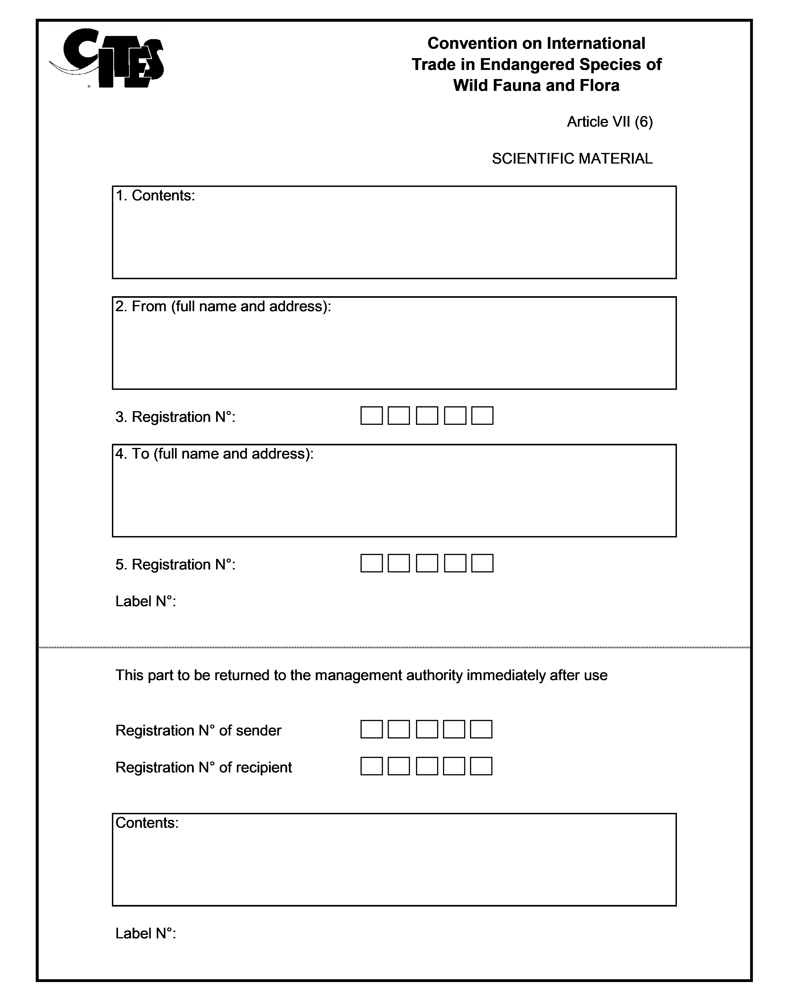

4.5.1 How is exchange between scientific institutions facilitated?
Scientists and scientific institutions often exchange specimens of species listed in the CITES Appendices or in the Annexes of Regulation (EC) No 338/97, as part of a non-commercial loan or donation. In order to facilitate this exchange and minimise the administrative burden, Article 7(4) of Regulation (EC) No 338/97 provides for simplified procedures for the movement of dead animal and plant specimens as well as for live plants, and allows the use of labels instead of permits or certificates. Annex VI of Regulation (EU) 792/2012 lays down the model for the label (see Figure 8) and Article 52 of Regulation (EC) No 865/2006 contains further details.
The label will only be used for the movement between registered scientists and scientific institutions of non-commercial loans, donations and exchanges of herbarium specimens; preserved, dried or embedded museum specimens; and live plant material for scientific study1. The registration of the scientist or scientific institution must be done by the Management Authority of the Member State in which they reside.
The scientists or scientific institution will then be attributed with a unique registration number consisting of five digits to be indicated on each label. The first two digits of that number will be the 2-letter ISO country code for the Member State concerned, and the last three digits a unique number assigned to each institution by the competent Management Authority2.
Figure 8: Label provided for in Article 2(6) of Regulation (EU) No 792/2012 and Article 52 of Regulation (EC) No 865/2006

4.5.2 Can permits and certificates be pre-issued for trade in biological samples?
In certain circumstances, such as for biomedical research or screening of fresh tissues for poisons, specimens of Annex-listed species must be prepared and shipped as fast as possible. To expedite this process, Article 18 of Regulation (EC) No 865/2006 provides for pre-issued permits and certificates regarding certain trade in biological samples of specimens of species listed in the Annexes or the CITES Appendices. The type of samples covered by pre-issued permits and certificates and their use, are specified in Annex XI of Regulation (EC) No 865/2006 (included in this Guide as Annex XIII).
Pre-issued and partially completed permits and certificates may be issued by the Management Authority to designated persons and bodies, provided that such persons and bodies have been approved by the Scientific Authority, and that a register of these persons and bodies is maintained by the Management Authority. The main criterion for approval by the Scientific Authority is that multiple transactions involving such biological samples would not have a harmful effect on the conservation status of the species in question3.
In addition to noting the names of persons and bodies registered to use pre-issued permits and certificates, the register should also include the species that the person/body may trade under the simplified procedures. This register must be reviewed by the Management Authority every five years4.
Registered persons and bodies must be authorised by the Management Authority to enter specific information on the permit/certificate provided that the Management Authority has entered into box 23, or in an appropriate annex to the permit/certificate, the following:
- a list of the boxes that registered persons or bodies are authorised to complete for each shipment, and
- a place for the signature of the person who completed the document5.
The container in which biological samples are shipped must also bear a label that specifies “CITES Biological Samples” and the CITES document number6.
4.5.3 What about the use of pre-issued documents for the (re-)export of dead specimens of species listed in Annexes B and C?
The export or re-export of dead specimens of species listed in Annexes B and C, including parts and derivatives thereof, may also be carried out with pre-issued permits or certificates7, provided that such trade is otherwise in accordance with Article 5(4) and Article 5(5) of Regulation (EC) No 338/978 (provisions on export and re-export). The Scientific Authority must also advise that such export/re-export will not be detrimental to the conservation status of the species concerned9.
Only registered persons or bodies may make use of these simplified procedures, and the register of persons and bodies must be reviewed by the Management Authority every five years10.
It is at the discretion of the Management Authority to determine who is eligible for inclusion in the list of “registered persons and bodies”. Registered persons and bodies must be authorised by the Management Authority to enter specific information on the permit/certificate into boxes 3, 5, 8 and 9 or 10, provided that they:
- sign the completed permit or certificate in box 23;
- immediately send a copy of the permit or certificate to the issuing Management Authority, and
- maintain a record, which must be produced to the competent Management Authority on request and which will contain details of the specimens sold (including the species name, type and source of specimen), the date of sale, and the names and addresses of the persons to whom they were sold.
-
Article 52(1) Regulation (EC) No 865/2006 ↩
-
Article 52(2) Regulation (EC) No 865/2006 ↩
-
Article 18(2) Regulation (EC) No 865/2006 ↩
-
Article 18(1)(a) Regulation (EC) No 865/2006 ↩
-
Article 18(1)(c) Regulation (EC) No 865/2006 ↩
-
Article 18(3) Regulation (EC) No 865/2006 ↩
-
Article 19(1) Regulation (EC) No 865/2006 ↩
-
Article 19(2) Regulation (EC) No 865/2006 ↩
-
Article 19(1)(a) Regulation (EC) No 865/2006 ↩
-
Article 19(1)(b) Regulation (EC) No 865/2006 ↩